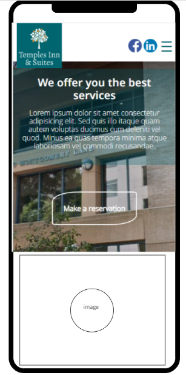
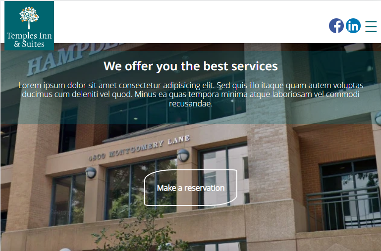
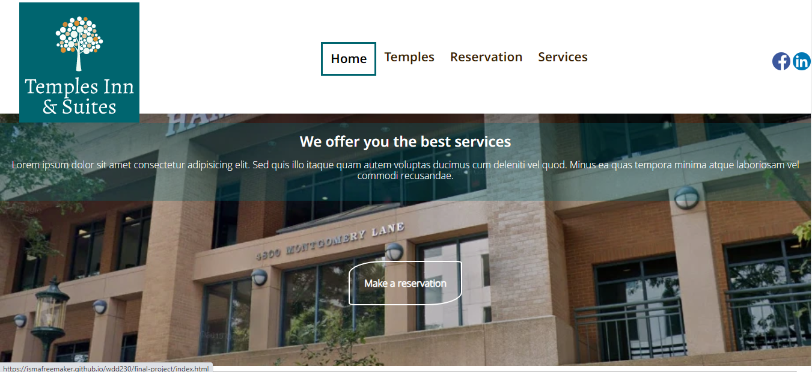
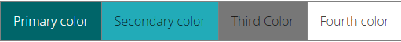

Site Purpose
The purpose of the site is to give an overview about what are the benefits of the Temples Inn and Suites for the members of the Church that make ordinances to the temples and need a place to stay meanwhile.
Site Logo
Small Screen
Medium screen
Large screen
Target audience
The target audience is the people who want to go to the Temple and need a place to stay meanwhile. The people who travel to the temple are: full temple missionaries, families, ward and stake members, youth groups, etc. There are many accomodations that the people need and this site will give the right information. This site is to make reservation more easy and faster than phone calls.
Personas
Sister Marjory Lopez
Demographics and Education: 60 years old. She is a member of the Church ten years ago. She is a full-time missionary. Her husband passed ago 6 years ago and has no children. She is a housewife. She visits the people in need and shows pure love others. She also loves music teaches piano.
Goals and motivation for using the site: She loves to go the temple and do the ordinances of salvation for her ancestors and other people she knew and wants them to know more about the gospel. This site will help her to book a place in the Temples Inn & Suites to make this great work.
Social: She loves to socialize with other people: members and nonmembers. When nonmembers, she shares the gospel and invites to listen to the missionaries. She loves to make cookies and food for others. She loves to direct the choir in her ward.
Technology: She knows very well the computer as for browse the necessary things in the media, internet and do invitations and souvenirs in the applications of Microsoft. So this site will be very help ful for her.
Quote: “The most important calling is have charity and love others.”
Jhonn & Maria Tanner
Demographics and Education: Jhon is a house constructor. He is very bussy but gives his best effort to be with his family and spend time with them in recreative activities. His wife, Maria, is a housewife. She takes care of their children guiding them in homeschooling. She, as well as his husband, are studying BYU-Pathway. They also have callings and do their best.
Goals and motivation for using the site: As they are new members, they will be sealed in a short time. This site will help them very much to book a place in The Temples Inn and Suites.
Social: They like to sing and play instruments. They love to play together and work in the vegetable pot.
Technology: As they are studying BYU-Pathway and their children are studying homeschooling with Khan Academy and Doulingo, they will have no problems to use the website and book a room for all of them.
Quote: “Keep trying and help will come.”
Scenarios
- What's the Temples Inn and Services?
- What are the benefits of this hotel?
- Where is it located? Which are the temples that are close to it?
- What are the necessary things that I need in order to get a reservation?
- What is the situation according to the pandemic of the COVID-19? Can I still be there?
Color Scheme
Typography
| Words | Font | Size | Color | Sample |
|---|---|---|---|---|
| Site Header | Noto Sans | 40px | #fff | Sample |
| Primary Navigation | Noto Sans | 30px | #FFA500 | Sample |
| Footer Navigation | Noto Sans | 20px | #A4B3B7 | Sample |
| Heading 1 (h1) | Noto Sans | 30px | #3D1F00 | Sample |
| Heading 2 (h2) | Noto Sans | 25px | #3D1F00 | Sample |
| Heading 3 (h3) | Noto Sans | 20px | #3D1F00 | Sample |
| Paragraph | Open Sans | 16px | #000000 | Sample |